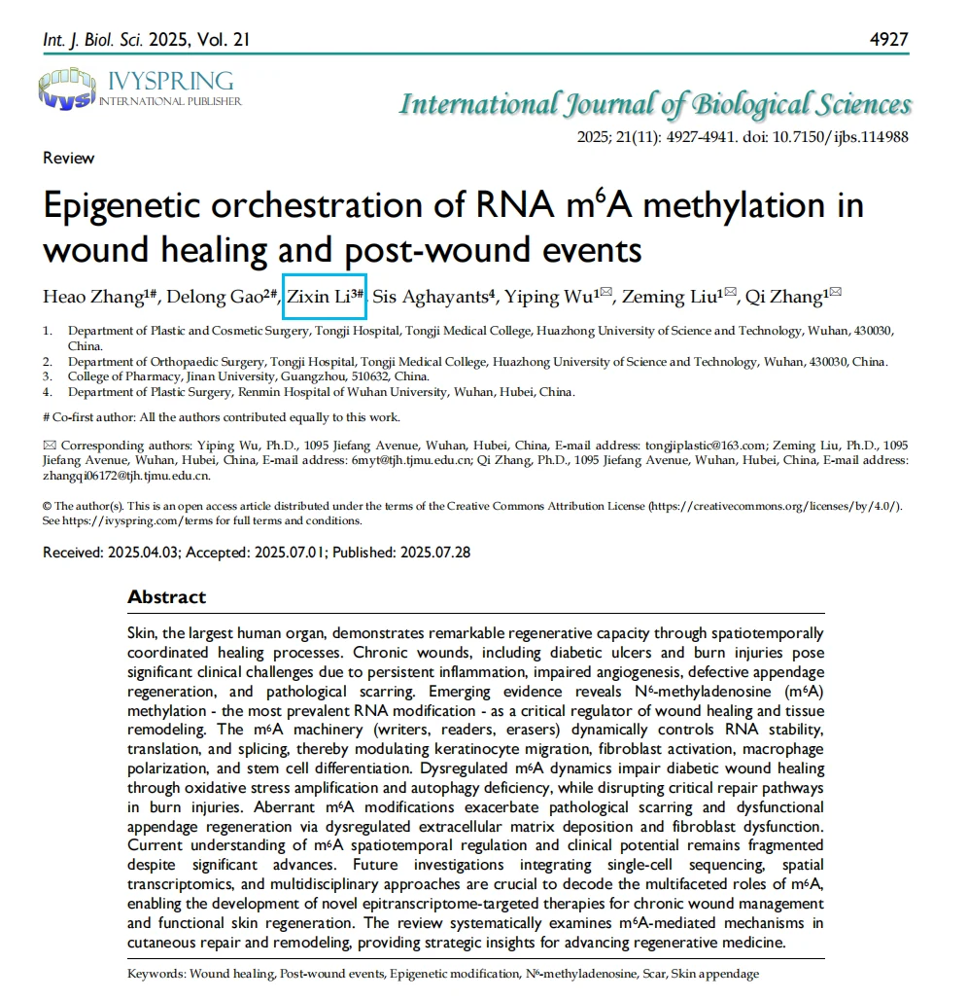

Undergraduate in Biopharmaceuticals at Jinan University, ranked 1st of 27 and selected for the university's 2023 Honors Undergraduate Development Program.
My interests span wound repair and tissue regeneration, drug delivery, and computational macrocycle design, with an emphasis on connecting mechanistic research to translational therapeutics.
4.16 GPA616 CET-67.5 IELTS9.0 Listening
学术背景Academic Profile
药学课程、语言能力与连续两年国家奖学金构成扎实的本科训练基础。
A strong undergraduate foundation in pharmaceutical sciences, academic English, and sustained academic distinction.
1 / 27专业排名Major Rank
97药剂学Pharmaceutics
× 2本科生国家奖学金National Scholarships
Top 1%本科优异学生培养计划Honors Program
科研论文与项目Research & Projects
单击左侧缩略图查看图示，单击论文标题访问正式页面。
Click a thumbnail to inspect the figures, or a paper title to open its publication page.
A review of m6A writers, readers, and erasers across normal wounds, diabetic wounds, burns, and post-wound events. I contributed literature synthesis and mechanism figures and led the section on wound-healing mechanisms.
聚焦重睑术后眼周肌肉过度活动导致的外观不满意，讨论肉毒素 A 的临床应用价值；负责作用机制部分的文献整理与撰写，并参与 40 余份临床案例整理。
A clinical study of botulinum toxin A for unsatisfactory eyelid appearance associated with periorbital muscle hyperactivity after blepharoplasty. I wrote the mechanism section and helped organize over 40 clinical cases.
The project combines the Macro-Hop reinforcement-learning framework with scaffold hopping to generate active macrocycle candidates and build Macrocycle-DB. I led coordination, database development, and secondary evaluation of generated molecules.
荣誉与实践Honors & Experience
持续参与学术交流、科普服务与跨地区学生交流。
Academic exchange, science outreach, and cross-regional student engagement complement my research training.
国家级荣誉National Honors
连续两学年获本科生国家奖学金（2023–2024、2024–2025）。
National Scholarship for Undergraduates in two consecutive academic years (2023–2024 and 2024–2025).
校级与学科荣誉University & Competition Honors
暨南大学优秀学生代表；“AI+”应用创新大赛一等奖负责人；中国国际大学生创新大赛校赛银奖负责人。
Outstanding Student Representative; project lead for first prize in JNU's AI+ Innovation Competition and a silver award in the university innovation competition.
Literature synthesis, mechanism reviews, scientific illustration with BioRender and Adobe Illustrator, interdisciplinary coordination, and candidate-molecule evaluation.
2024–2026 · 学术交流与社会实践2024–2026 · Academic Exchange & Public Engagement
从壁报交流到科普实践From Poster Presentation to Science Outreach
学院本科生代表 · 国家级大创核心成员 · 校级优秀学生骨干School Representative · Core Member of a National Innovation Project · Student Leader
Selected as one of three undergraduate school representatives for a national pharmacy symposium, delivered project outreach at Meizhou Experimental Middle School, and joined Jinan University's outstanding-student exchange visit to Hong Kong.
I plan to pursue pharmaceutics with a focus on drug-delivery systems, pulmonary disease intervention, and in-vitro/in-vivo evaluation, while bridging computational candidate design with developability and translational delivery.
m6A 与创面愈合m6A & Wound Healing
论文首页与创面愈合四阶段机制图Article preview and the four phases of wound healing

International Journal of Biological Sciences · 论文首页International Journal of Biological Sciences · Article preview止血、炎症、增殖与重塑阶段Hemostasis, inflammation, proliferation, and remodeling
肉毒素 A 的临床应用Clinical Application of Botulinum Toxin A
Aesthetic Plastic Surgery
共同第一作者（第二署名）Co-first Author (second listed)
分子魔方 · 方法与平台Molecular Cube · Method & Platform
Macro-Hop · Macrocycle-DB
多来源大环分子数据库Multi-source macrocycle database生成、采样、评价与迭代优化Generation, sampling, evaluation, and refinement
学术交流与社会实践Academic Exchange & Public Engagement
2024–2026
全国药学创新人才培养研讨会 · 壁报交流National Pharmacy Innovation Symposium · Poster presentation百千万工程三下乡 · 科普实践Rural outreach · Science communication暨南大学优秀学生访港团Jinan University outstanding-student visit to Hong Kong